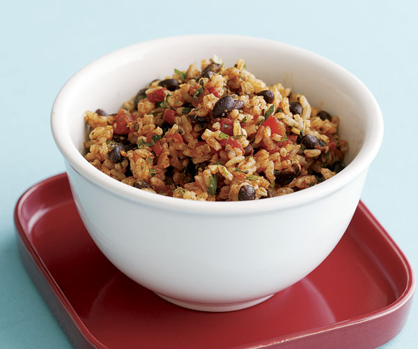

Mexican Rice and Beans
Desciption
Typical mexican dish that is sooo yummy in the tummy ay ay ayyy
Ingredients
- 1 tablespoon canola oil
- 2 celery ribs, chopped
- 1 medium green pepper, chopped
- 1 medium onion, chopped
- 1 can (28 ounces) diced tomatoes, undrained
- 1 can (16 ounces) kidney beans, rinsed and drained
- 2 cups cooked brown rice
- 2 teaspoons Worcestershire sauce
- 1-1/2 teaspoons chili powder
- 1/4 teaspoon pepper
- 1/4 cup shredded cheddar cheese
- 1/4 cup reduced-fat sour cream
- 2 green onions, chopped
Directions
- In a large nonstick skillet, heat oil over medium-high heat. Add celery, green pepper and onion; cook and stir until tender.
- Stir in tomatoes, beans, rice, Worcestershire sauce, chili powder and pepper; bring to a boil. Reduce heat; simmer, covered, 7-9 minutes or until heated through. Top with cheese, sour cream and green onions.
Nutrition Facts
1-1/2 cups: 354 calories, 8g fat (3g saturated fat), 13mg cholesterol, 549mg sodium, 58g carbohydrate (13g sugars, 12g fiber), 15g protein.